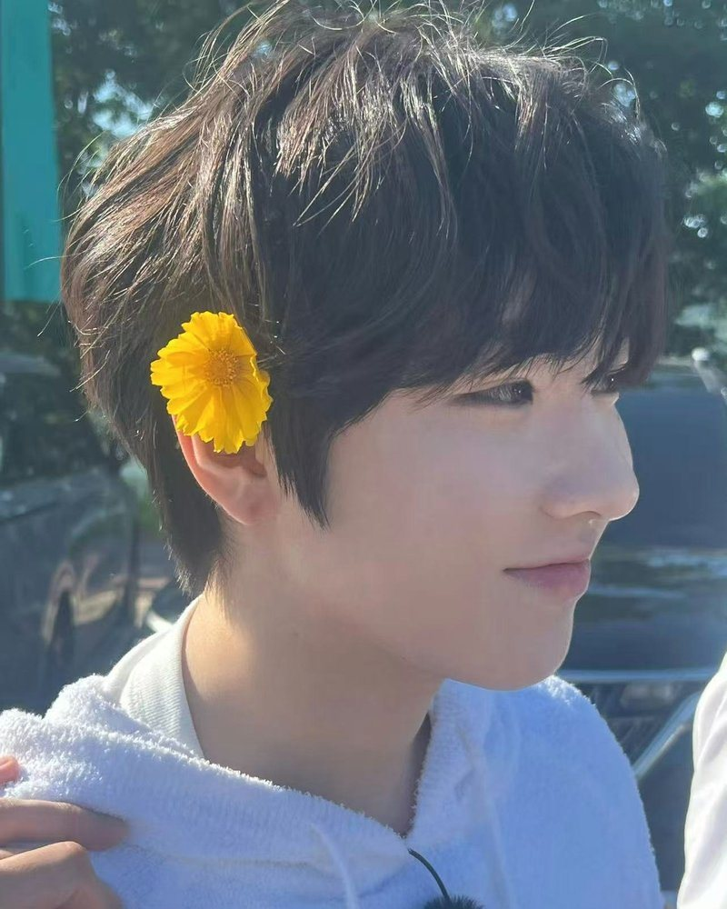

一个从埼玉来，一个从东京来。他们在同一个团里，隔着半步的距离，被镜头一起拍下来。
“同一件事，两个人做，会变成两种样子。”
咲哉做的时候是热闹的，声音先到，人后到；勇志做的时候是安静的，先看一眼，再慢慢来。
这个站想留住的，就是这种差别——同一条走廊、同一束光、同一场演出，他们各自的样子，和他们站在一起的样子。
声音比脸先到。笑起来眼睛先弯，说话的时候会往前凑半步，好像怕你听不清。
话不多，但记得住。看人的时候很直，笑的时候又很快移开视线，像被自己抓到一样。
一卷三十六张，拍完只用了一个下午。
他们走过的那条路，现在还在。
为什么做、怎么更新、以及免责声明。